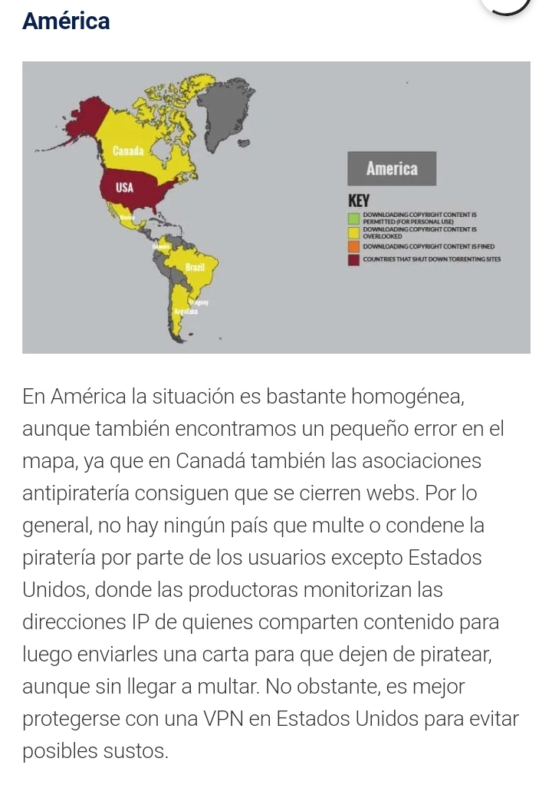

Las propuestas incompletas

Desde hace mucho tiempo, como pais tratamos de salir adelante, toda la vida nos han dicho que somos un pais rico pero que jamás podemos salir adelante, porque no nos permiten crecer, lo escuché de mis maestros desde que era un niño y aseguró que varios de ustedes también.
Han pasado más de 14 años y ahora Bolivia dejó de ser ese país del cual solo hablaban por pobre o por narcotráfico, entramos al mapa internacional pero ya por otros factores (eliminación del analfabetismo,disminución de la mortandad materno infantil, satelite propio, disminución de pobreza extrema, nacionalización, primer presidente indígena, etc)
Pese a ello y después de haber sobrevivido a la #DictaduraEnBolivia de #Añez y su séquito seguimos cayendo en propuestas inconclusas, que al momento de plantear mejoras que ya corresponden a actos de países de “1er mundo” en el mapa. El ejemplo claro fue la idea de incursionar en el cobro de impuestos a plataformas de servicios de pago a través de internet, la iniciativa como tal es buena, pero fue mal socializada e incompleta, déjenme explicar:
Es de conocimiento nacional entre los internautas expertos y medianamente expertos que somos uno de los países con el peor servicio de internet de la región, empero el Estado Plurinacional ha relizado esfuerzos para que esta situación cambie, uno de ellos es colgarse de la red de fibra óptica del Perú la cual fue firmada en la binacional del año 2019 en Moquegua, logró que se quisieron adueñar durante el 2020 la dictadura de añez. La propuesta inconclusa es que no se socializa los beneficios de dicho acuerdo o nuestra estatal (Entel) no está ejerciendo el rol correspondiente para acelerar el acceso de dichos beneficios a la población.
Otro aspecto a resaltar es el poco conocimiento de nuestra idiosincrasia nacional por los proyectistas de la norma, referente a quitar los privilegios de exoneración de pagar ciertas cosas (partiendo desde grandes empresarios fachos como Camacho que no pagan impuestos, hasta población humilde de base, que cuando se quiso quitar la subvención a los hidrocarburos salió a protestar), pero debemos avanzar y empezar a tomar conciencia del beneficio de los impuestos, pero más allá de eso es la complementariedad de las normas propuestas, acá debio realizarse un proyecto completo,es así que informo que cobrare impuestos a aplicaciones de paga y a otras en sus versiones premium, pero presentare alternativas a precios bajos o similares pero NACIONALES, esa mentalidad de que el boliviano no puede crear plataformas o cosas buenas es lo que nos lleva a creer que no podemos avanzar, esa mentalidad limitada de pensar que no podemos tener derecho a cosas de “boga” que antes solo eran únicamente del “1er mundo”, porque no pensar en un Spotify nacional, un portal tipo Netflix nacional a base de nuestra conocida piratería y por ende lanzar paralelamente estas propuestas o conjuntamente con la norma de pago de impuestos a estas plataformas antes mencionadas. Pensamos que no tendríamos derecho a cosas de “1er mundo” y vimos satélite, carros eléctricos, empresa de computadoras nacionales, empresa de textiles, empresas propias de telecomunicaciones entre algunas. Ese “lamento boliviano” que se ha tenido durante años (parafraseando a evo) sigue aún en la mente de varios (nótese que no digo varios de izquierda o derecha) todo esto porque las propuestas son incompletas, por tanto para poder llegar a hacer entender a nuestra población, que no es decirle de manera ligera y simplona “solo pagaras 30 ctvs o 10 bs más por tu servicio de paga”, es llegar a decirle “pagarás por esto, pero también te ofrezco esto, es bueno y de yapa sabes que…es NACIONAL”

Existen varios países que han “legalizado” la piratería, y otros que la denuncian pero pese a ello, saben bien que coexiste de manera normal con todos, en el día a día, basta con ir a los puestos de venta de libros fotocopiados, o ir a comprar tu película en dvd pirata, pero que pasaría si el estado empieza a ser un poco más socialista con su gente y a darles acceso a estos espacios de entretenimiento, de educación a título gratuito o a un costo competitivo y siendo producto nacional, en lugar de elevar el costo de un servicio foráneo sin ofrecerle una alternativa a la población.
He ahí las propuestas incompletas que día a día nos desgastan como proceso de cambio.
Atentamente
Gabo Campero Nava
Miembro del Colectivo “La Vanguardia”
Militante del MAS y del Proceso de cambio.